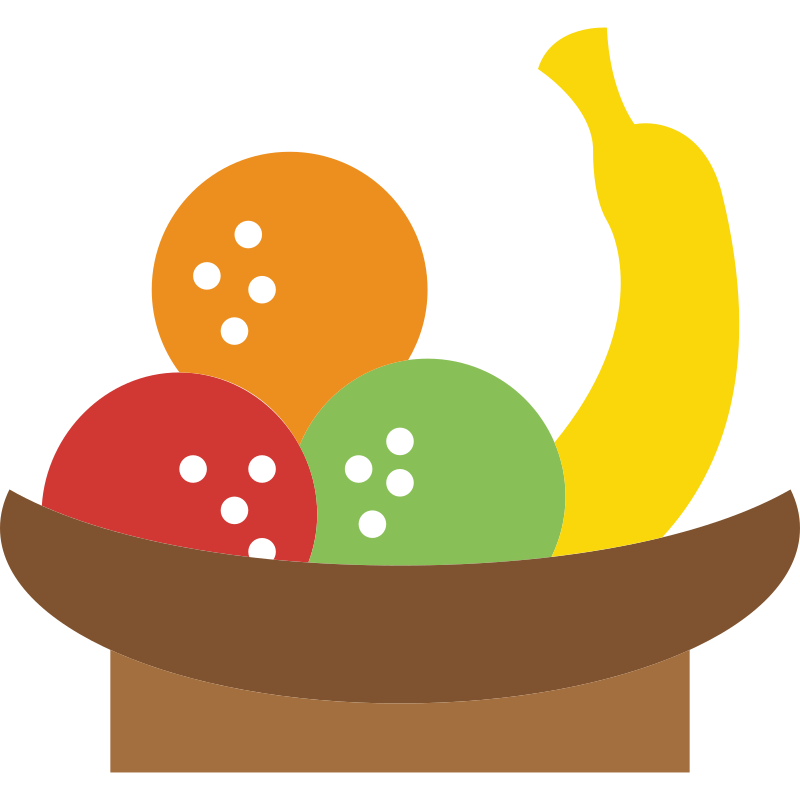
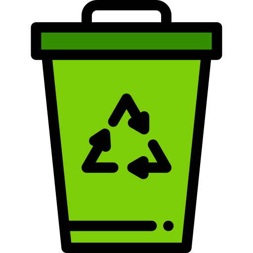
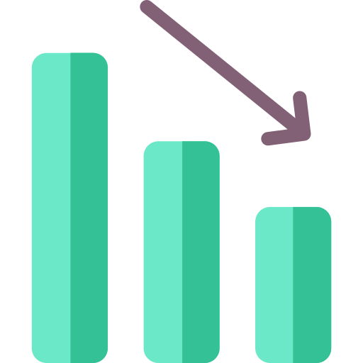

Aqui no ECOnsciente, você encontrará informações e dicas práticas de armazenamento de frutas, legumes e
nones, e para testar seus conhecimentos participe dos nossos quizzes e veja o quanto você realmente
sabe. Nosso objetivo é conscientizar e educar a população sobre a importância de reduzir o desperdício
de alimentos, acreditamos que pequenas mudanças em nossos hábitos diários podem ter um grande impacto.
Economia
Ao adotar práticas sustentáveis, as famílias podem economizar em suas compras, aproveitando melhor os
alimentos e reduzindo a necessidade de reposição constante.
Diminuição dos Custos de Saúde
Uma dieta rica em frutas e verduras pode reduzir gastos com saúde a longo prazo, já que uma
alimentação saudável previne doenças e diminui despesas com tratamentos.

Prolongamento da Vida Útil dos Alimentos
Com orientações sobre armazenamento correto, o projeto ajuda as pessoas a manterem frutas, legumes e
verduras frescos por mais tempo, reduzindo a necessidade de compras frequentes e o desperdício
desnecessário.
Preservação de Nutrientes e Sabor
Armazenar e conservar os alimentos de forma adequada evita a perda de nutrientes e mantém o sabor
natural dos produtos, promovendo uma alimentação mais nutritiva e saborosa.

Redução do Impacto Ambiental do Descarte
Orientações sobre o descarte sustentável ajudam a diminuir a quantidade de lixo orgânico enviada para
aterros e incentivam a compostagem caseira, o que reduz a emissão de gases de efeito estufa e
enriquece o solo.

Diminuição da Emissão de Gases de Efeito Estufa
Com a redução do desperdício de alimentos, há uma diminuição na produção de resíduos orgânicos que,
quando decompostos, emitem gases de efeito estufa. O projeto contribui para minimizar esses impactos
ambientais.
MAÇÃ
Existem mais de 7.500 tipos de maçãs no mundo.
PERA
A pera é composta por cerca de 85% de água.
BANANA
A banana é uma das frutas mais consumidas no mundo.
KIWI
O kiwi é uma excelente fonte de vitamina C, ajudando a fortalecer o sistema imunológico.
MANGA
A manga é rica em antioxidantes e vitamina A, beneficiando a saúde da pele e visão.
MELANCIA
A melancia é composta por mais de 90% de água, sendo ideal para hidratar e refrescar em dias quentes.
PÊSSEGO
O pêssego é fonte de fibras e vitamina C, contribuindo para uma pele saudável e boa digestão.
ABACAXI
O abacaxi é rico em bromelina, uma enzima que ajuda na digestão e alivia inflamações.
LARANJA
A laranja é rica em vitamina C, essencial para fortalecer o sistema imunológico e melhorar a absorção de
ferro.
PEPINO
O pepino é composto por mais de 95% de água, tornando-se uma excelente opção para hidratação e
refrescância, especialmente em dias quentes.
ABÓBORA
A abóbora é uma excelente fonte de beta-caroteno, que é convertido em vitamina A pelo organismo,
essencial para a saúde ocular e o fortalecimento do sistema imunológico.
BATATA
A batata é rica em potássio, um mineral importante para a regulação da pressão arterial e o bom
funcionamento dos músculos e nervos.
CEBOLA
A cebola contém compostos antioxidantes e anti-inflamatórios, que ajudam a fortalecer o sistema
imunológico e podem melhorar a saúde do coração e a digestão.
BETERRABA
A beterraba é rica em nitratos, que ajudam a melhorar a circulação sanguínea e aumentar a resistência
durante os exercícios.
ASPARGO
O aspargo é uma excelente fonte de ácido fólico, essencial para a saúde celular, e contém antioxidantes
que ajudam a proteger o organismo contra o envelhecimento precoce.
RABANETE
O rabanete é rico em vitamina C e fibras, que ajudam a fortalecer o sistema imunológico e a melhorar a
digestão, além de ter propriedades anti-inflamatórias.
ERVILHA
A ervilha é uma ótima fonte de proteínas e fibras, que ajudam na saciedade e na saúde digestiva, além de
conter antioxidantes que promovem a saúde cardiovascular.
BERINJELA
A berinjela é rica em fibras e antioxidantes, que ajudam a reduzir o colesterol e melhorar a saúde do
coração, além de ter propriedades anti-inflamatórias.
ALFACE
A alface é baixa em calorias e rica em fibras, o que a torna uma aliada na digestão e na manutenção do
peso saudável, além de conter antioxidantes benéficos para a pele.
COUVE
A couve é uma excelente fonte de vitamina K, que desempenha um papel fundamental na saúde óssea e na
coagulação do sangue, além de conter antioxidantes que ajudam a combater inflamações.
ESPINAFRE
O espinafre é rico em ferro e folato, essenciais para a formação de glóbulos vermelhos e prevenção de
anemia, além de conter antioxidantes que favorecem a saúde do coração.
BRÓCOLIS
O brócolis é uma excelente fonte de vitamina C e fibras, que fortalecem o sistema imunológico e auxiliam
na digestão, além de conter compostos que podem proteger contra o câncer.
AGRIÃO
O agrião é rico em vitamina K e antioxidantes, que ajudam a fortalecer os ossos e a proteger as células
do corpo contra danos.
REPOLHO
O repolho é rico em fibras e antioxidantes, que ajudam na digestão e podem reduzir o risco de doenças
cardíacas.
ACELGA
A acelga é rica em vitaminas A e K, que ajudam na saúde ocular e na coagulação do sangue, além de ser uma
excelente fonte de antioxidantes.
PIMENTÃO
O pimentão vermelho é rico em vitamina C e betacaroteno, que fortalecem o sistema imunológico e promovem
a saúde da pele.
COENTRO
O coentro é rico em antioxidantes e nutrientes, que ajudam a desintoxicar o corpo e podem melhorar a
saúde digestiva.